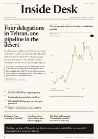

Inside Desk, as pages
The same edition as the website, laid out as a newspaper: every desk on its own page, interactive charts, a reading view, search, and a PDF to keep. Some pieces appear only here, and each carries the time it was added.

Four delegations met, and the inventories kept counting.
Saudi Arabia, Pakistan and Turkey sat with Iran's leaders in Tehran while the Houthis claimed another pipeline strike; Brent gave back about 1.6%. The ifo rose for a sixth month, Brazil's loser filed his complaint, and the Rhine climbed to 55 cm. Eleven desks, every number sourced.
Published 17:59 CET · ePaper extras added 21:55 CET · Updated 21:55 CET · 18 pages · 30 pieces
When it appears
- 06:30 Morning ePaper. The website's morning edition follows at 08:30, built from the same pieces.
- 17:30 Evening ePaper. It can be updated until 22:30; an “Updated” time and a Latest page show what changed and when.
- Sun 10:00 The Sunday Magazine. Saturday is closed.
Berlin time (CET in winter, CEST in summer). Free, like everything here. After you open an issue once, it stays readable offline on that device.
ePaper archive
October 2026
- 26 Oct 2026Evening ePaperFour delegations met, and the inventories kept counting.18 pages · 30 pieces · PDF · Website edition
- 26 Oct 2026Morning ePaperThe referees meet in the same week as the invoices.16 pages · 33 pieces · PDF · Website edition
- 25 Oct 2026Sunday MagazineThe second Saturday was counted20 pages · 34 pieces · PDF · Website edition
- 23 Oct 2026Evening ePaperThe wind paid for Friday. The tank did not.21 pages · 35 pieces · PDF · Website edition
- 23 Oct 2026Morning ePaperThe bonds caught what the shares dropped.18 pages · 32 pieces · PDF · Website edition
- 22 Oct 2026Evening ePaperThe price is for the risk, not the barrel.21 pages · 34 pieces · PDF · Website edition
- 22 Oct 2026Morning ePaperRead the release before the reaction.19 pages · 32 pieces · PDF · Website edition
- 21 Oct 2026Evening ePaperTrust the date on the notice.19 pages · 35 pieces · PDF · Website edition
- 21 Oct 2026Morning ePaperBelieve the one that counts the ships.16 pages · 30 pieces · PDF · Website edition
- 20 Oct 2026Evening ePaperRead the receipt before the chart.16 pages · 32 pieces · PDF · Website edition
- 20 Oct 2026Morning ePaperBetter a closed bridge than a crossed one.17 pages · 33 pieces · PDF · Website edition
- 19 Oct 2026Evening ePaperCount the curfew hours, not the speech.16 pages · 36 pieces · PDF · Website edition
- 19 Oct 2026Morning ePaperCount the follow-up, not the province.17 pages · 31 pieces · PDF · Website edition
- 18 Oct 2026Sunday MagazineRead the week in the order it was paid.20 pages · 36 pieces · PDF · Website edition
Every issue stays at its own address. The website archive lists them under their day, too.